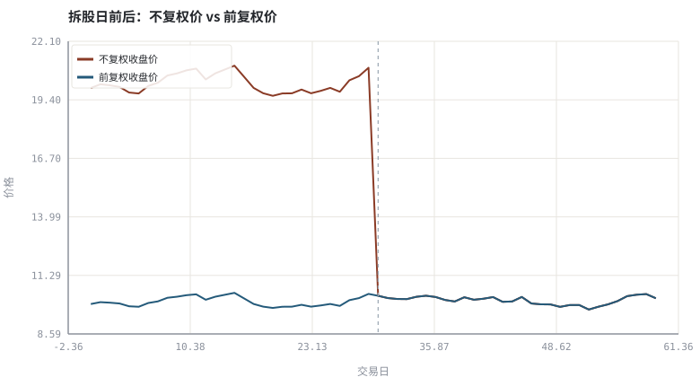
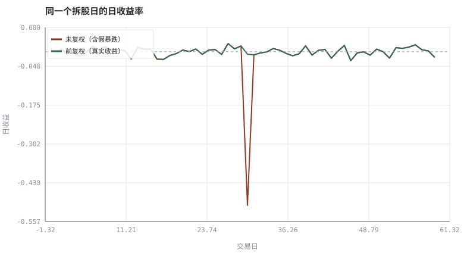

第 06 章行情数据模型：OHLCV、复权与时间戳
先校准数据，再谈策略：一根 K 线里最危险的不是价格，而是口径。
本章位置：第 04 章的规则产出「成交」，本章把这些成交整理成可计算的时间序列；第 07 章 · 公募基金与 ETF：净值、申赎与跟踪 用同样的口径处理基金净值，第 16 章 · K 线、坐标与复权：看图前先校准数据 把 OHLCV 画成 K 线。
复权因子是数据库里的版本化 migration：公司行动一到，历史行的含义就变了。不记录快照版本的回测，等于用今天的 schema 去解释昨天的数据。
- 能写出一根 K 线的字段结构，并说明每字段的交易含义。
- 能区分前复权、后复权与不复权，判断何时该用哪种。
- 能识别拆股、分红造成的非交易性跳变并做修正。
- 能说明时区、交易日历、缺失值与对齐如何造成伪信号。
§知识点地图
每个知识点都配了 1～2 个扩展学习链接；本章完整资源清单见 扩展学习。
| # | 知识点 | 扩展学习 | 状态 |
|---|---|---|---|
| 1 | OHLCV 数据结构 | OHLC chart · Candlestick chart | 正文已覆盖 |
| 2 | 成交量与成交额 | Volume (finance) · OHLC chart | 正文已覆盖 |
| 3 | 前复权与后复权 | Adjusted closing price · Stock split | 正文已覆盖 |
| 4 | 拆股与公司行动 | Stock split · Adjusted closing price | 正文已覆盖 |
| 5 | 除息与分红 | Dividend · Stock split | 正文已覆盖 |
| 6 | 交易日历与时间戳 | OHLC chart · Order book | 正文已覆盖 |
| 7 | 时间序列对齐 | OHLC chart · Order book | 正文已覆盖 |
| 8 | 缺失值与停牌 | OHLC chart · Order book | 正文已覆盖 |
§6.1一根 K 线是一个五元组加时间戳
任何交易 App 的图表底层都是同一张表：(timestamp, open, high, low, close, volume, amount)。K 线的周期（1 分钟 / 日 / 周）只是对逐笔成交的 group by 聚合：open = 首笔、close = 末笔、high/low = 极值、volume = 求和。
| 字段 | 聚合方式 | 口径陷阱 |
|---|---|---|
| open / close | first / last | 集合竞价是否计入、收盘价是否为加权收盘价 |
| high / low | max / min | 盘中瞬时插针，用错周期会消失 |
| volume | sum | 拆股后股数翻倍，成交量口径需同步调整 |
| amount | sum | 成交额含费用与否、币种换算 |
| timestamp | group by key | 时区、交易日边界、是否用收盘时刻还是起始时刻 |
| adj_factor | 公司行动累积 | 前复权会随新的公司行动整体改变历史值 |
关键结论：复权价不是行情，而是「为了可比较而构造的派生列」。真实下单用的是不复权价与当时的最小单位；做收益计算、回测与技术指标必须用复权后序列。
§6.2复权：把公司行动还原成连续收益
r_真实 ≈ (P_t × 调整因子_t) / (P_(t−1) × 调整因子_(t−1)) − 1
1 股拆为 2 股时价格腰斩，但股东权益没变；若直接用不复权价算日收益，会得到一根 −50% 的假暴跌，进而触发所有止损、均线与波动指标。前复权把历史价格按比例缩小到当前口径，后复权把当前价格放大到历史口径；两者收益序列相同，绝对价格不同。
- 不复权：还原当时可成交的价格，用于订单与盘口复盘。
- 前复权：最新价格保持真实值，历史被缩放，看盘软件默认常用。
- 后复权：起点价格保持真实值，后续被放大，做长期收益与回测最直观。
- 注意：每次新增公司行动，前复权序列会整体变化，因此回测数据要记录快照版本（见第 25 章）。
§6.3时间戳、对齐与缺失
多资产分析要把不同交易日历、不同时区、不同停牌日对齐到同一条时间轴。三种常见错误：forward fill 把停牌日填成旧价制造零收益（低估波动）；用未来交易日的消息填充过去（数据泄漏）；把两个市场的收盘价直接相减（时差造成的伪相关）。工程上的正确做法是先定义统一日历与观察时刻，再 join，最后把「没成交」「没数据」「已退市」三类缺失显式编码，而不是静默填充。
任何一条策略上线前，先问三句：价格复权了吗？时间戳是本地还是 UTC？缺失值是「没成交」还是「没数据」？
§Python 分析实例
实验 6-1 · 拆股造成的假暴跌与三种价格口径
#!/usr/bin/env python3
# -*- coding: utf-8 -*-
"""构造含一次 1 拆 2 的合成 OHLCV，比较不复权与前复权收益，并画出价格与收益对照。
数据为合成数据或模型示意，仅用于教学，不构成投资建议。
"""
from __future__ import annotations
import math
import pathlib
import random
import statistics
import sys
sys.path.insert(0, str(pathlib.Path(__file__).resolve().parents[3] / "tools"))
from chart import Chart, candlestick, heatmap, BLUE, RED, GREEN, AMBER
FIG = pathlib.Path(__file__).resolve().parents[1] / "fig"
FIG.mkdir(exist_ok=True)
random.seed(7)
# ---- 参数区 ----
N = 60 # 交易日数
SPLIT_DAY = 30 # 拆股发生日
FACTOR = 2.0 # 1 股拆为 2 股
BASE = 20.0 # 起始价格
VOL = 0.015 # 日波动
# ---- 计算与作图 ----
rng = random.Random(7)
raw, px = [], BASE
for i in range(N):
px *= (1 + rng.gauss(0.001, VOL))
if i == SPLIT_DAY:
px /= FACTOR
raw.append(px)
adjusted = [v / FACTOR if i < SPLIT_DAY else v for i, v in enumerate(raw)]
ohlcv = []
for c in raw:
o = c / (1 + rng.gauss(0, 0.004))
h = max(o, c) * (1 + abs(rng.gauss(0, 0.003)))
l = min(o, c) * (1 - abs(rng.gauss(0, 0.003)))
v = int(1e6 * (1 + abs(rng.gauss(0, 0.3))))
ohlcv.append((round(o, 3), round(h, 3), round(l, 3), round(c, 3), v))
raw_ret = [raw[i] / raw[i - 1] - 1 for i in range(1, N)]
adj_ret = [adjusted[i] / adjusted[i - 1] - 1 for i in range(1, N)]
c = Chart(FIG / "06-adjusted.svg", "拆股日前后：不复权价 vs 前复权价", xlabel="交易日", ylabel="价格")
c.line(range(N), raw, RED, label="不复权收盘价")
c.line(range(N), adjusted, BLUE, label="前复权收盘价")
c.vline(SPLIT_DAY, "#9aa6b2", label="拆股日")
print("价格图:", c.save())
r = Chart(FIG / "06-returns.svg", "同一个拆股日的日收益率", xlabel="交易日", ylabel="日收益")
r.line(range(1, N), raw_ret, RED, label="未复权（含假暴跌）")
r.line(range(1, N), adj_ret, GREEN, label="前复权（真实收益）")
r.hline(0.0, "#9aa6b2")
print("收益图:", r.save())
print("OHLCV 首行=%s" % (ohlcv[0],))
print("拆股日 未复权收益=%.2f%% 前复权收益=%.2f%% | 全期 未复权=%.2f%% 前复权=%.2f%%" %
(100 * raw_ret[SPLIT_DAY - 1], 100 * adj_ret[SPLIT_DAY - 1],
100 * (raw[-1] / raw[0] - 1), 100 * (adjusted[-1] / adjusted[0] - 1)))操作：观察 raw_ret[29] 附近的 −50% 尖峰；把 FACTOR 改成 1（无拆股）后尖峰应消失。 预期与判读：不复权序列在拆股日产生约 −50% 的假收益，前复权序列保持连续。全期累计收益两者相差约一倍：这解释了为什么长期回测必须使用复权价。
改参数看趋势：把 SPLIT_DAY 移到第 5 天，观察图形与累计收益如何变化。 文件位置：part1/06-data-model/code/06-adjust.py


代码块右上角可一键复制；仓库里的 code/*.py 由 tools/extract_code.py 从这些代码块自动抽取。脚本只用标准库、固定 random.seed(7)，运行后写出 fig/*.svg；批量运行用 ./tools/run_python.sh。
§本章参考资料
按本章知识点挑选的精读资料；更多检索入口见 扩展学习。
OHLC chart
百科 · 参考资料开高低收四价的数据结构
怎么用：OHLC 四价的数据结构定义https://en.wikipedia.org/wiki/Open-high-low-close_chart
Adjusted closing price
百科 · 参考资料前复权/后复权与公司行动处理
怎么用：前复权/后复权与公司行动处理https://en.wikipedia.org/wiki/Adjusted_closing_price
§常见误区
- 用不复权价计算长期累计收益或均线。
- 把前复权价格当成历史真实可成交价去下单。
- 新增分红后未重新拉取前复权序列，导致历史回测结果悄悄变化。
- 跨市场直接对齐收盘时刻，忽略时区与节假日差异。
§习题与思考
- 推导为什么前复权与后复权的收益率序列完全相同（提示：两者只差一个常数因子）。
- 给示例增加一次现金分红，写出对应的复权因子形式。
- 列出三种「缺失值」语义，并说明各自应如何处理。
§扩展学习
以下资料按本章知识点挑选，可直接精读或对照真实数据；知识点地图里每一条也挂了 1～2 个直达链接。
- OHLC chart（百科）：开高低收四价的数据结构
OHLC chart - Order book（百科）：买卖档位、深度与逐笔撮合
Order book - Adjusted closing price（百科）：前复权/后复权与公司行动处理
Adjusted closing price - pandas（工具）：时间序列对齐、分组与缺失处理的工业标准
pandas - AKShare（数据）：开源中文金融数据接口（A 股/基金/宏观）
AKShare
继续扩展：在 Google Scholar 检索本章相关论文 · 在 MIT OCW 检索配套课程 · 在 arXiv 检索预印本 · 全书参考资源总表 · 附录 A 速查与链接总表
§延伸阅读与内链
- 第 16 章 · K 线、坐标与复权：看图前先校准数据 K 线与坐标；第 25 章 · 数据管道：对齐、公司行动与幸存者偏差 数据管道与 point-in-time 快照；第 26 章 · 事件驱动回测引擎：从信号到成交 回测中的价格口径。